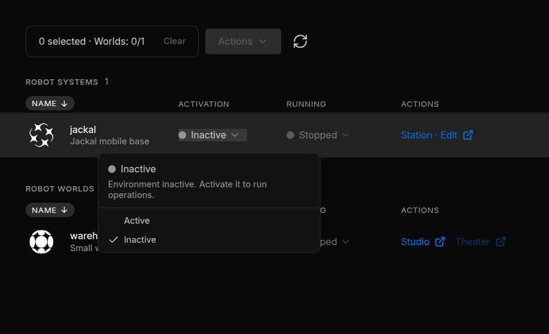
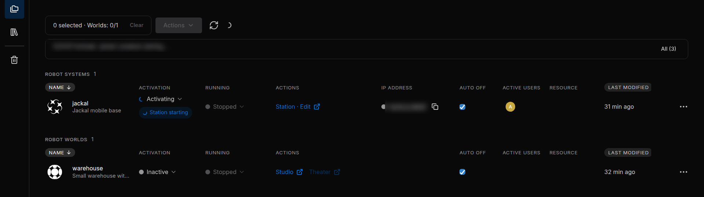
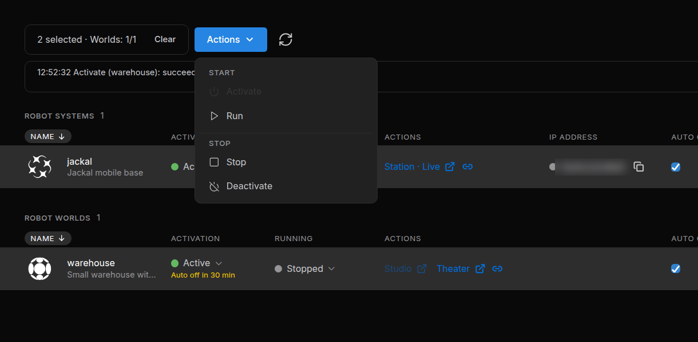
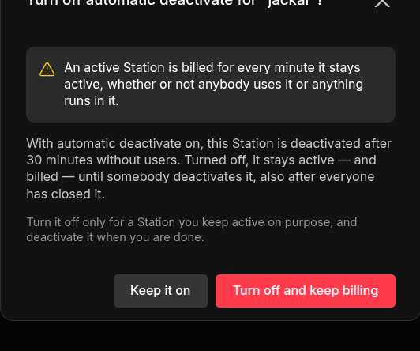

Activate and Run¶
Each Robot System and Robot World has its own cloud environment. Activate prepares it, Run starts its work, Stop ends the work, and Deactivate releases the environment. Stopping a World resets its pose and clock; it is not a pause that preserves progress.
An active environment uses credits. It is billed for every minute it is active, whether or not anybody uses it or anything runs in it. Stop does not end that; Deactivate does (Credits and Usage).
How It Works¶
Two columns of the project page control a file: Activation brings its environment up or down, and Running starts or stops what runs in it.
flowchart LR
I["Inactive"] -- "Activate" --> S["Active<br>Stopped"]
S -- "Run" --> R["Active<br>Running"]
R -- "Stop" --> S
S -- "Deactivate" --> I
R -- "Deactivate" --> I| Action | Robot System | Robot World | Credits |
|---|---|---|---|
| Activate | Starts the environment and restores the Station's saved data and apps. No node starts. | Starts the environment and loads the World's scene. The simulation does not play yet. | Use begins |
| Run | Starts every saved node, like Start all nodes in the Station | Plays the simulation | No change |
| Stop | Stops the nodes | Stops the simulation and resets the World's pose and clock | Use goes on |
| Deactivate | Stops the nodes, saves the Station's data, then tears the environment down | Tears the environment down | Use ends |
A typical session: select the Robot World and the Robot Systems that drive it, choose Actions › Activate, then Actions › Run. Watch the World in Theater and work with the robots in Station · Live. Stop when you pause, and Deactivate when you are done.
1. Activate and Deactivate¶
Click the state in a file's Activation column and choose Active to activate the file, or Inactive to deactivate it.


While the file activates, it shows Activating and the current step, for example Station starting or World starting. It is usually Active after about a minute.


| State | Meaning |
|---|---|
| Inactive | Not active. Uses no credits. |
| Activating | Coming up. You can already choose Inactive. |
| Active | Up, and using credits |
| Deactivating | Going down. This cannot be interrupted. |
| Error | The activation failed, or the environment stopped unexpectedly. Open the menu for the reason. |
- After an Error, choose Active to try again, or select the file and choose Actions › Deactivate to release it.
- Only one Robot World per project can be active (How Robot Worlds and Robot Systems Work Together).
A chip next to the column shows each result, for example Environment active or Failed. Click Failed to read the message.
While a request runs, the menu also offers Cancel workflow (no rollback). It stops the request but undoes nothing: an environment that already came up stays active, and keeps using credits, until you deactivate it.
2. Run and Stop¶
Once a file is Active, click the state in its Running column and choose Running or Stopped.
A World without a scene cannot run: build it in Studio first. Stopped keeps the file active, so it keeps using credits.
| State | Meaning |
|---|---|
| Running | Operations are running |
| Partly running | Robot System only: some nodes did not start. A Failed badge and a banner above the tables explain why. Open Station · Live and read that node's log (Run and Monitor). |
| Stopped | Operations are stopped. Also shown while the file is not active. |
| Error | The World reported an error |
| - | The state cannot be read. People with Can view always see -. |
3. Open a File¶
The Actions column holds the links that open a file in a new browser tab. A dimmed link tells you on hover why it cannot open now.
| Link | Opens when | Opens |
|---|---|---|
| Station · Edit | The Robot System is not active | The Station editor. Its Go live button activates the Station. |
| Station · Live | The Robot System is Active | The running Station (Stellar Station) |
| Studio | The Robot World is Inactive or in Error | The World editor (Studio) |
| Theater | The Robot World is Active | The live view of the World (Theater) |
Opening a file never starts nodes or plays a World. To edit an active World in Studio, deactivate it first.
Choose Rendering Mode¶
Before Studio or Theater opens, the portal asks how to draw the World on your screen.
| Mode | Draws the World |
|---|---|
| RTX Real-time | On a cloud GPU, with advanced materials and lighting. Each Studio or Theater tab in this mode runs its own cloud renderer, which uses credits. |
| WebGPU | In your browser, on this device's GPU. Performance depends on your hardware. |
Pick a mode and click Open Cosmic Studio or Open Cosmic Theater. Remember on this device. preselects your choice next time. The mode only changes how you see the World, not the simulation, and each person chooses their own.
4. Several Files at Once¶
Editors and managers can handle several files together from the selection bar.
- Select the files: click their rows, or tick the box at the end of a row. A selection holds any number of Robot Systems and at most one Robot World.
- Open Actions and choose an item.
- Follow the progress in the files' chips and in the log under the selection bar.


The menu offers Activate, Run, Stop and Deactivate, which act on every selected file as How It Works describes.
- There is no single step that activates and runs: choose Run once the files are active.
- The files are handled independently: if one fails, the others carry on.
- Sodero carries on with a request after you close the page. Back on the project page, click the refresh button to follow it again.
5. Auto Off¶
Auto off deactivates an active file that nobody has used for 30 minutes (the default). It is on for every file unless an editor turns it off.
| File | In use while |
|---|---|
| Robot System | Someone has the Station open in a browser tab, or an AI agent or a Project VPN tool works with the Station |
| Robot World | Someone watches it in Theater |
Running nodes and a playing World do not count as use: a World left playing with no viewer is deactivated like an idle one.
When nobody is using an active file, a yellow countdown appears under its state: Auto off in N min. It stops when somebody opens the file, and starts a minute or two after the last person leaves.
Turn Auto Off Off¶
To keep a file active on purpose, clear its Auto off box. The portal warns that the file is billed for every minute it stays active: click Turn off and keep billing to confirm, or Keep it on.


The file then stays active, and keeps using credits, until somebody deactivates it. Tick the box to turn Auto off on again.
Deactivate what you no longer need. Auto off is a safety net, not a replacement for deactivating.
6. Messages and Errors¶
| Message | What to do |
|---|---|
| Activating and deactivating needs edit access to this project. | Your role is Can view. Ask a manager for Can edit. |
| Another Robot World is already running in this project | Deactivate the active World first. |
| This workspace has run out of credits. … | See When Credits Run Out. |
| The … plan runs at most N Systems and Worlds at once. … | Deactivate another Robot System or Robot World first; stopping it is not enough. |
| Environment failed to activate | Read the reason under it, then choose Active to try again. |